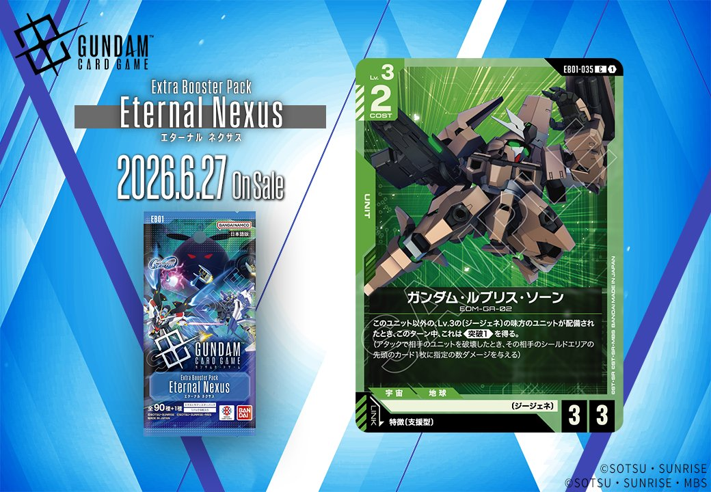
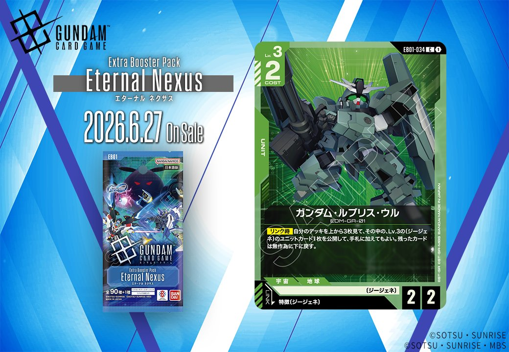

2026年6月27日発売のEB01「Eternal Nexus」より、緑のUNIT 2枚が公開されました。ガンダム・ルブリス・ソーン（EB01-035）は支援型PILOTとのリンクを、ガンダム・ルブリス・ウル（EB01-034）はジージェネPILOTとのリンクを持つ、それぞれ異なる特徴リンクを要求するUNITとなっています。

ガンダム・ルブリス・ソーン (EB01-035)
| 色 | 緑 | タイプ | UNIT |
| Lv | 3 | コスト | 2 |
| AP | 3 | HP | 3 |
| 特徴 | 〔ジージェネ〕 | ||
| リンク条件 | 特徴に支援型を持つPILOT | ||
効果: このユニット以外の、Lv.3の〔ジージェネ〕の味方のユニットが配備されたとき、このターン中、これは《突破(1)》を得る。
ガンダム・ルブリス・ソーンは、Lv.3の〔ジージェネ〕ユニットが配備されるたびに《突破(1)》を得る連続強化型ユニット。メイア・シヴァのリンク効果やレイジの【セット時】効果と組み合わせることで、ブロッカーを持つユニットへのアタックが可能になり、《突破》によるシールドダメージを確実に狙える。 特徴に支援型を持つパイロットとリンクできるため、サポート系パイロットとの相性も良く、〔ジージェネ〕デッキの中継ぎアタッカーとして活躍が期待される。



ガンダム・ルブリス・ウル (EB01-034)
| 色 | 緑 | タイプ | UNIT |
| Lv | 3 | コスト | 2 |
| AP | 2 | HP | 2 |
| 特徴 | 〔ジージェネ〕 | ||
| リンク条件 | 特徴にジージェネを持つPILOT | ||
効果: 【リンク時】自分のデッキを上から3枚見て、その中の、Lv.3の〔ジージェネ〕のユニットカード1枚を公開して、手札に加えてもよい。残ったカードは無作為に下に戻す。
ガンダム・ルブリス・ウルは、リンク時に緑のジージェネデッキの安定性を高める優秀なサーチ効果を持つLv.3ユニットです。デッキトップ3枚から同じLv.3のジージェネユニットを手札に加えられるため、ビルドストライクガンダム(フルパッケージ)(EX)やガンダムエクシア(EX)などの強力な高レベルユニットへの繋ぎ役として機能します。 COST2でAP2/HP2という標準的なスペックながら、レイジやメイア・シヴァなどのジージェネパイロットと組み合わせることで、中盤の展開を支える重要な役割を担えるでしょう。


関連カード
-
 クィン・マンサ (オメガ・サイコミュ起動時)(EB01-024)NEW緑系 — 同色・共通特徴: ジージェネ（新カード）
クィン・マンサ (オメガ・サイコミュ起動時)(EB01-024)NEW緑系 — 同色・共通特徴: ジージェネ（新カード） -
 レイジ(EB01-066)NEW緑系 — 同色・共通特徴: ジージェネ（新カード）
レイジ(EB01-066)NEW緑系 — 同色・共通特徴: ジージェネ（新カード） -
 ビルドストライクガンダム(フルパッケージ)(EX)(EB01-021)NEW緑系 — 同色・共通特徴: ジージェネ（新カード）
ビルドストライクガンダム(フルパッケージ)(EX)(EB01-021)NEW緑系 — 同色・共通特徴: ジージェネ（新カード） -
 ガンダムエクシア(EX)(EB01-022)NEW緑系 — 同色・共通特徴: ジージェネ（新カード）
ガンダムエクシア(EX)(EB01-022)NEW緑系 — 同色・共通特徴: ジージェネ（新カード） -
 メイア・シヴァ(EB01-065)NEW緑系 — 同色・共通特徴: ジージェネ（新カード）
メイア・シヴァ(EB01-065)NEW緑系 — 同色・共通特徴: ジージェネ（新カード） -
 マーク・ギルダー(ST10-012)NEW白系 — リンク対象（支援型 PILOT）（新カード）
マーク・ギルダー(ST10-012)NEW白系 — リンク対象（支援型 PILOT）（新カード） -
 ダリル・ローレンツ(EB01-070)NEW白系 — リンク対象（支援型 PILOT）（新カード）
ダリル・ローレンツ(EB01-070)NEW白系 — リンク対象（支援型 PILOT）（新カード） -
 エリス・クロード(EB01-061)NEW青系 — リンク対象（支援型 PILOT）（新カード）
エリス・クロード(EB01-061)NEW青系 — リンク対象（支援型 PILOT）（新カード） -
 ユウ・カジマ(EB01-072)NEW白系 — リンク対象（ジージェネ PILOT）（新カード）
ユウ・カジマ(EB01-072)NEW白系 — リンク対象（ジージェネ PILOT）（新カード） -
 開発経路図の解放(ST10-014)NEW青系 — リンク対象（ジージェネ PILOT）（新カード）
開発経路図の解放(ST10-014)NEW青系 — リンク対象（ジージェネ PILOT）（新カード）